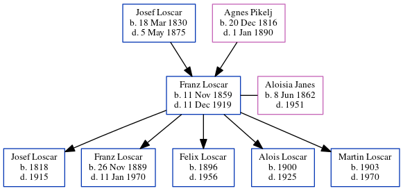

Franz Xaver Loscar 1859 - 1919
[ Home ] | [ Calendar ] | [ Surnames Index ] | [ Census Index ] | [ Family History ]The child of Josef Loscar and Agnes Pikelj, Franz Loscar, the great-great-uncle of Michele Copp (née Phillips), was born in Cemicnik, Slovenia on Nov 11, 1859 and had 5 children with Aloisia Janes: Josef, Franz, Felix, Alois and Martin.
He died on Dec 11, 1919.
Parents
- Josef was born on Mar 18, 1830
- Agnes was born on Dec 20, 1816
Children
- Josef was born in 1818
- Franz was born on Nov 26, 1889
- Felix was born in 1896
- Alois was born in 1900
- Martin was born in 1903
Family Tree
Generated by ged2site. Last updated on Jun 6, 2024